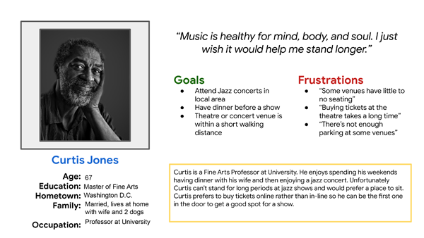
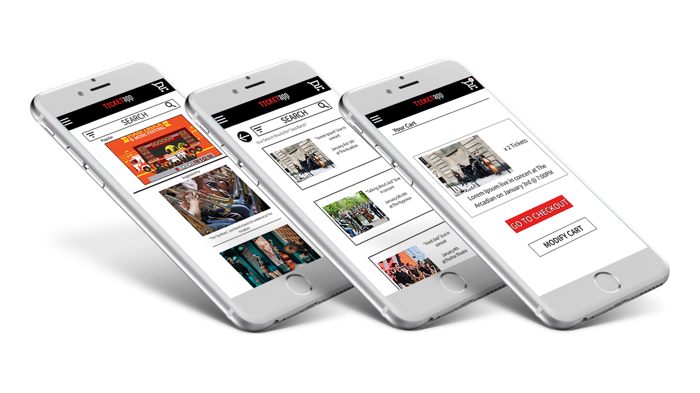

Personas
My first step in my project was to make user personas to learn about who would be using the app


From sharpen.design prompt to high fidelity prototype
My first step in my project was to make user personas to learn about who would be using the app
I then created user journey maps to find pain points in the user experience that could be improved
The next step in my research and design process was to conduct a competitive audit of direct competitors and indirect competitors to form impressions on what made their user experience good and what could be improved on
After gathering information from my intial user experience research I proceeded to start creating basic rough wireframes
After choosing features from the Basic Wireframes, I used Figma to create early digital concept wireframes to showcase user flow from start to purchase.


My next step was to create a interactive low fidelity prototype
I then used my low fidelity prototype to conduct a user research and usability study to find pain points in the initial prototype. From the study a User Affinity Map was generated to identify pain points that needed to be corrected

Taking the information from the usability studies an updated prototype was created with color and imaging.

After final usability studies and color contrast checking a final high fidelity prototype was produced showcasing the user experience from start to successful purchase.